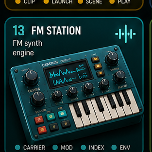

FM Station
FM synth page with generated audio and local pad memory.
Layer: FM synth plus local pad memory.
Use: play pads or load local audio.
Input: touch, mouse, keyboard, and MIDI-ready pads.

FM synth page with generated audio and local pad memory.